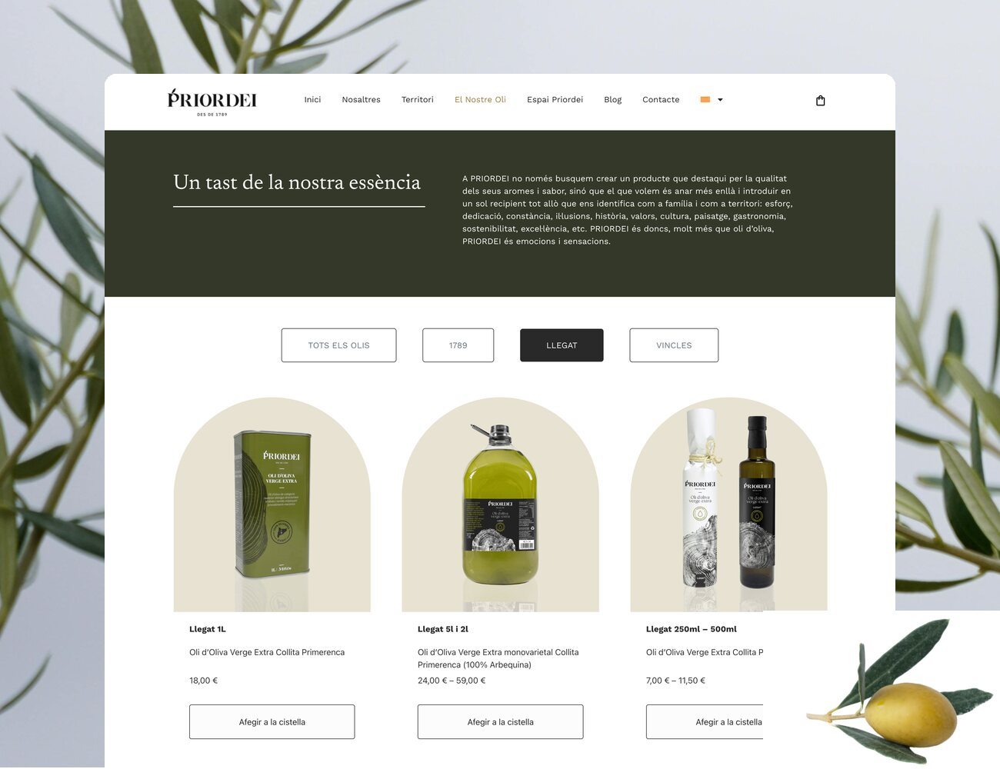
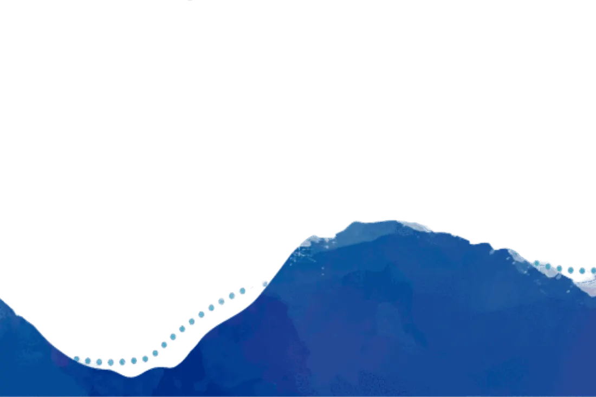
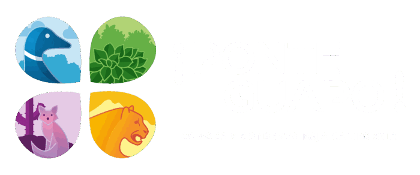
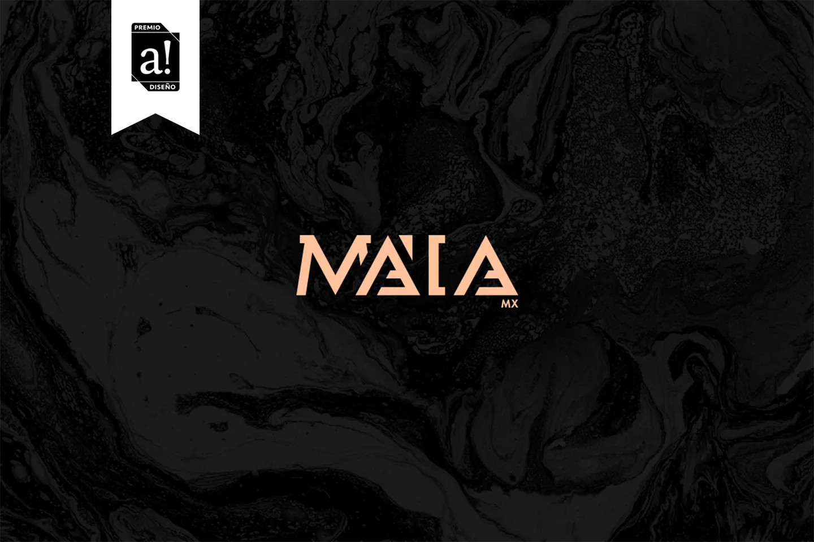
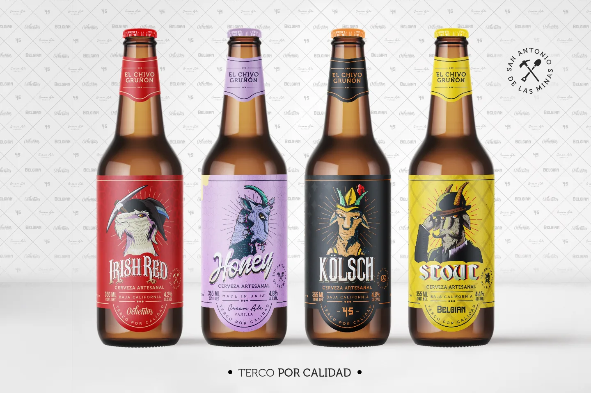

PRIORDEI
WebsiteTurning Priordei's oil heritage into a seamless, high-converting e-commerce experience.

Turning Priordei's oil heritage into a seamless, high-converting e-commerce experience.


Branded conservation: identity, signage, and eco-infrastructure for over 5,000 hectares of natural reserves.
Reimagining a 30-year medical institution through intuitive UX and high-converting booking journeys.

Premium 100% Mexican leather bags and wallets made for nationwide distribution.

Stubborn for quality: crafting personality-driven beers that bridge craft enthusiasts and casual drinkers.
Bridging non-fiction and purpose-driven design through friction-free wellness activity books.